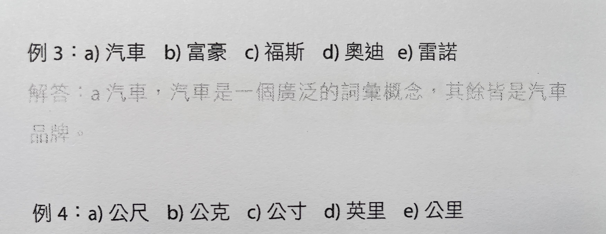
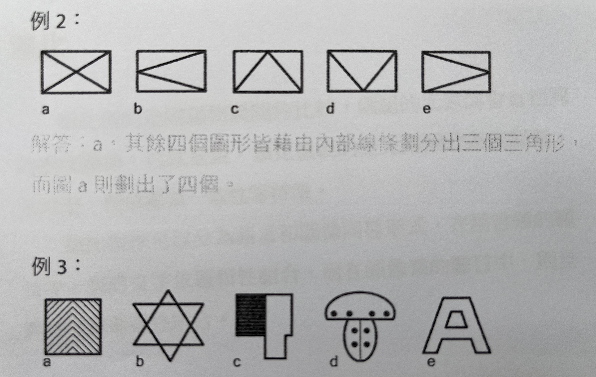
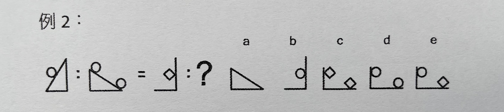
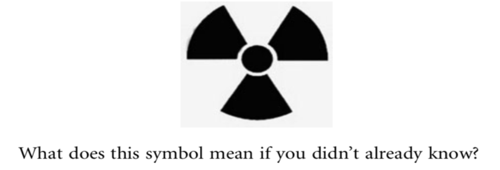
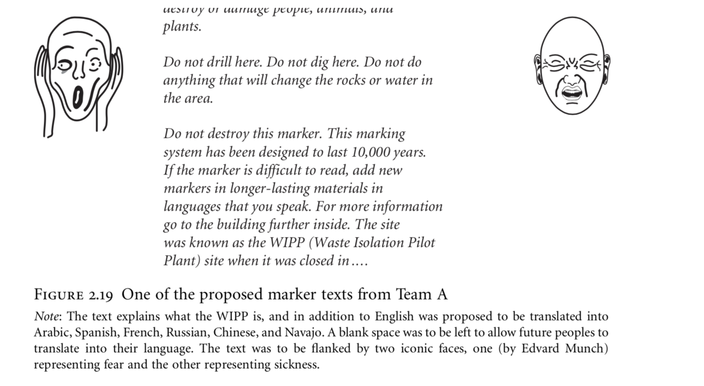
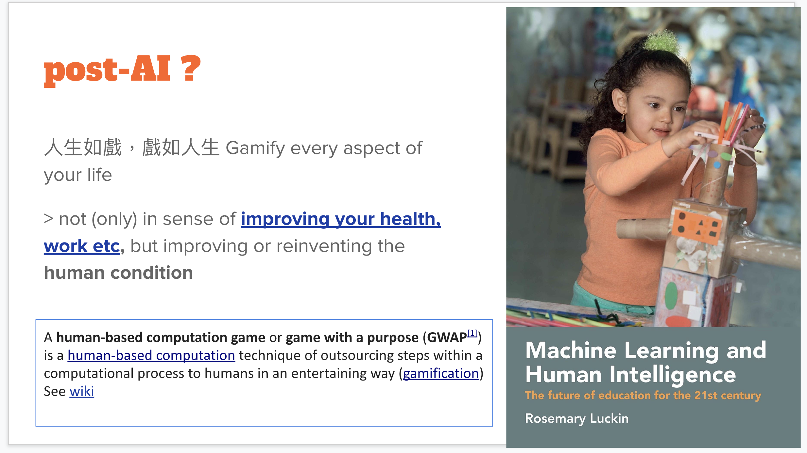
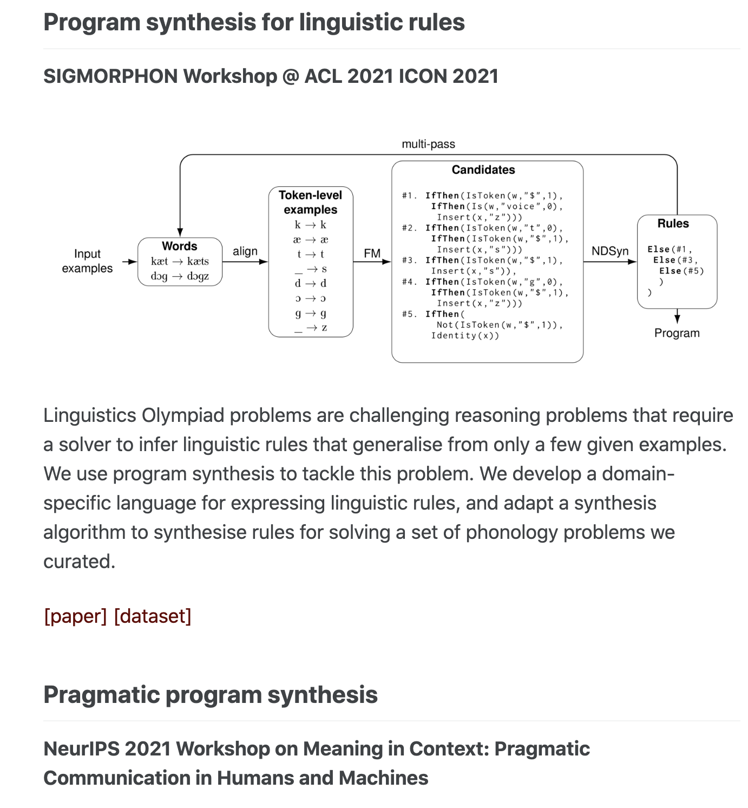
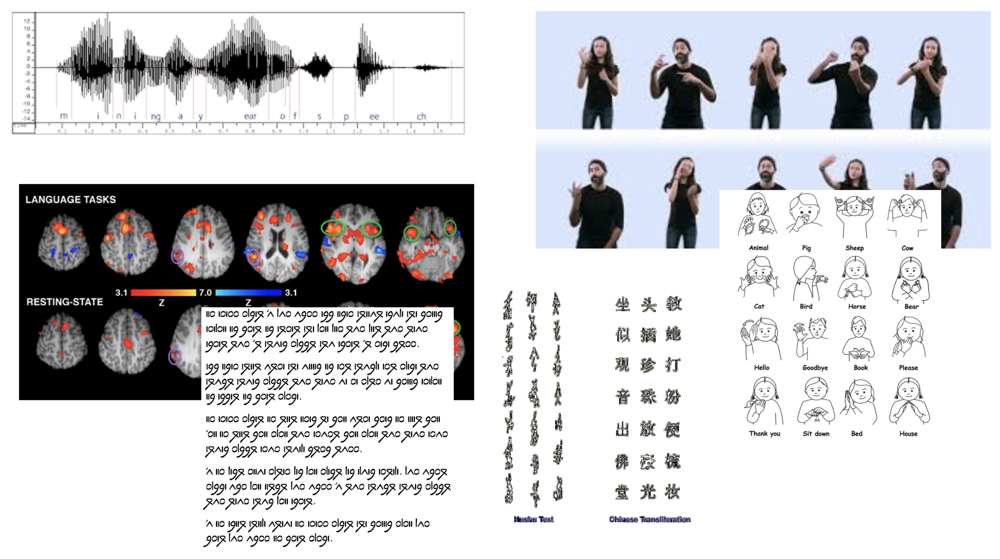

Week 2 語言類型與文化邏輯
2023-04-12
今天的主題
所謂的語言的邏輯分析是什麼？
我們怎麼利用語言遊戲的設計與解謎來學習語言的邏輯分析？
先備知識背景：語言類型與文化邏輯
語言的邏輯分析
語言中的邏輯思考與分析力
- 認知、判斷、察覺關聯、感知、同理與想像
先來一點(語言)智力測驗
分類邏輯


類比邏輯

課堂練習 [1]
- 分別就前四類的題目 (
文字與圖形的分類與類比)，你可以綜合整理出什麼樣的分析模式（與題型）呢？
語言學家的解碼工作
是綜合性的語言、文字與邏輯運算
文化數學
思考的演算
The power of computational thinking
兩位倫敦皇后大學的資訊科學教授出版了一本計算思維的入門書（The power of computational thinking，台灣中譯：「思考的演算」），介紹了在 AI 時代需要的思考能力訓練，包括了
- 邏輯思考 》 能夠考慮所有的可能性，因而也能有效率的推導與解決問題。
- 模型比對 》能觀察到問題／數據本質上的相似性
- 捷徑思考 》不保證最佳解，但追求在合理時間內的合理解。
- 資料表徵法 》 能夠抽象化與通化所觀察到的資料
- 對人有所瞭解 》理解人，才知道問題皆有脈絡，才能對症下藥。
Rethinking “computational thinking”
計算思維的概念，勢必要往更多元的方向發展。單從資訊科學的角度出發，可能難以套解不同領域或是跨領域的問題。此外，計算思維與想像力、創造力如何結合是個有趣的教育議題。>> 語言、認知與文化
新世代帶來新問題。要面臨的複雜情境必然地跨越了傳統的學門邊界。也就是說，問題常常是以「主題」、「任務導向」的面貌出現，而我們傳統學校教育設計恐怕來不及因應這個趨勢。
用「遊戲」「解謎」等思考娛樂的方式，可能是補足教育的一個趨勢。
什麼是語言的文化想像
University with Diversity
- 跨文化、跨世紀、跨物種的語言想像力
核廢料隔離先導場標語設計
The Waste Isolation Pilot Plant (WIPP) is designed as the final resting place for ‘transuranic’ waste, consisting mostly of items rendered radioactive during the production of nuclear weapons.
- 位於新墨西哥州境內的地下核廢料永久儲存場「核廢料隔離先導場」 從 1999 年起，便儲存來自全美核武實驗室與核武設施的超鈾核廢料，該核廢場每年須處理的核廢料高達數千桶。The US. has produced 55,000 tons of this waste, and continues to produce about 2,000 tons annually. It's highly toxic and will remain toxic for app. 10,000 years. (FYI: twice as long as all of recorded histoty!)- how do we set up a waning signs? (Sproat, 2010)
 
Conventionality
符碼-意義都是約定俗成的，不瞭解這個 慣例性 的意義，就無法很好理解這個符碼的意義（從而容易產生偏見）。
- Symbols (linguistic, mathematical, stop signs, or nuclear trefoils), are conventional.
you have to know that what they mean, and if you don’t know, and if you don’t share the cultural background of the people who created them, it is unlikely in general that you are going to figure them out. (Sproat, 2010)
我們怎麼利用語言遊戲的設計與解謎來學習語言的邏輯分析？
語言遊戲是什麼？能做什麼？
抒發情緒
學習工具
Game as a language resource / Game with a purpose
An example: Sementria
- 語意經驗 (semantic experience) 字詞聯想遊戲
semantris
隨著 AR/VR 技術的快速發展，加上與 AI/IOT 的結合，可以想像一個有趣的人類意識的轉化。虛實難分的景況，人生如戲，戲如人生。遊戲產生了新的哲學高度。而遊戲所產生的人類反應資料，也成了機器學習的材料。以 Google 公開的「語意經驗」字詞聯想遊戲
semantris為例，我們在玩遊戲中輸入的「答案」，正足以訓練與增強機器逼近人類的支持語意相似度判斷準確能力。
- 語言遊戲，在 AI - 自然語言處理的需求之下可以預見的將成為重要的一種「語言資源」。我們在遊戲中留下的邏輯推理軌跡，除了訓練人類，也訓練機器。語言分析與解碼作為一種有趣但尚未普及的語言遊戲。
多看看各種 AI 相關的遊戲設計可以嗅出一些端倪
Solving Linguistic Puzzles with AI
語言解謎：語言遊戲中的邏輯推理：後 AI 時代 的人類能力培養與娛樂 😆
語言謎題題目類型
word play? 回文構詞 (anagrams)? 繞口令？文字接龍？猜字推理？
IOL (Rosetta Stone Linguistic Problems (Bozhanov and Derzhanski 2013))
Problem Solving in IOL
- Time and memory “complexity”
- 為何需要解碼時間限制
- 為何需要團隊合作 （Check team contest IOL）
- Essentialism, minimalism
- 最少的步驟
- 最少的假說
- 最大IOL
機器解題的意義
rule-based to in-context learning
 
從 ConLang 來想也可以，更難一點
人造語言/constructed languages: a gateway to the complexity and creativity of 【LANGUAGE】
CMU course : ConLanging: Learning about linguistics and language technologies through construction of artificial languages
創造遊戲，而不要被遊戲制約
An interactive guide to the game theory of cooperation
短期來講，遊戲決定玩家，但是長期來說，決定遊戲的正是我們這些玩家。
語言、語料、語料庫、語言資源
語料 (language and linguistic data)
語言類型學 | Linguistic typology
to find similarities among languages that are independent of genetic origin, areal influence, and shared environment conditions. (Moravcsik 2012)
lexical, syntactic, morphological, phonological typology
Lexical Typology
各種語言的詞彙在以下的幾個層面上有什麼 相同/不同的特徵？
body parts, kinship terms, personal pronouns, numerals, antonymic adjectives, and color terms, etc.
Syntactic Typology
choice of words, word forms and orders
out of 1228 languages
SOV: 497
SVO: 435
VSO: 85
VOS: 26
OVS: 9
OSV: 4
Lacking a dominant order: 172
世界語言與文字地圖
``{r, warning=FALSE, message=FALSE} library(lingtypology) wordOrder <- wals.feature(c("81a")) map.feature(wordOrder$language, features = wordOrder$81a`, latitude = wordOrder\(latitude, longitude = wordOrder\)longitude, label = wordOrder$language, title = “Word Order”, control=T, zoom.control = T)
```
課堂練習時間 🐤
我們來練習兩題完全不需要語言學背景的題目。